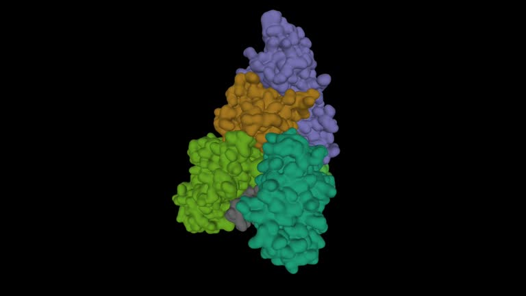

Información detallada con referencias según normas APA 7ª edición
Introducción
La tos ferina, conocida científicamente como Bordetella pertussis, es una enfermedad respiratoria altamente contagiosa que afecta principalmente a lactantes y niños (World Health Organization [WHO], 2018). Se caracteriza por episodios de tos persistente y severa que pueden durar semanas (Centers for Disease Control and Prevention [CDC], 2022).
Manifestaciones Clínicas
La enfermedad evoluciona en tres fases: catarral, paroxística y convaleciente. Durante la fase catarral, los síntomas son similares a un resfriado común. En la fase paroxística se presentan accesos intensos de tos que pueden provocar vómitos y fatiga extrema (Cherry, 2019).
Tabla 1. Fases clínicas y síntomas principales de la tos ferina
Fase
Duración aproximada
Síntomas principales
Catarral
1-2 semanas
Congestión nasal, estornudos, tos leve
Paroxística
2-6 semanas
Tos severa en accesos, vómitos, cianosis
Convaleciente
2-3 semanas
Disminución gradual de la tos
Aspectos Microbiológicos
Bordetella pertussis es una bacteria gramnegativa que produce toxinas responsables de la sintomatología clínica (Melvin, Scheller, Miller, & Cotter, 2014). La adhesión y la producción de toxinas pertussis (PT) y adenilato ciclasa son claves para la patogénesis.

Video explicativo
Para entender mejor la tos ferina, a continuación se presenta un video educativo:
Referencias
Centers for Disease Control and Prevention website. Vaccines and immunizations. Vaccine information statement. Td (tetanus, diphtheria) vaccine VIS. Td (tetanus, diphtheria) vaccine: what you need to know. www.cdc.gov/vaccines/hcp/current-vis/td.html. Updated August 6, 2021. Accessed January 29, 2025.
Murthy N, Wodi AP, Bernstein H, McNally V, Cineas S, Ault K. Advisory Committee on Immunization Practices recommended immunization schedule for adults aged 19 years or older - United States, 2022. MMWR Morb Mortal Wkly Rep. 2022;71(7):229-233. PMID: 35176010 pubmed.ncbi.nlm.nih.gov/35176010/.
Souder E, Long SS. Pertussis (Bordetella pertussis and Bordetella parapertussis). In: Kliegman RM, St. Geme JW, Blum NJ, Shah SS, Tasker RC, Wilson KM, eds. Nelson Textbook of Pediatrics. 21st ed. Philadelphia, PA: Elsevier; 2020:chap 224.
Wodi AP, Murthy N, Bernstein H, McNally V, Cineas S, Ault K. Advisory Committee on Immunization Practices recommended immunization schedule for children and adolescents aged 18 years or younger - United States, 2022. MMWR Morb Mortal Wkly Rep. 2022;71(7):234-237. PMID: 35176011 pubmed.ncbi.nlm.nih.gov/35176011/.